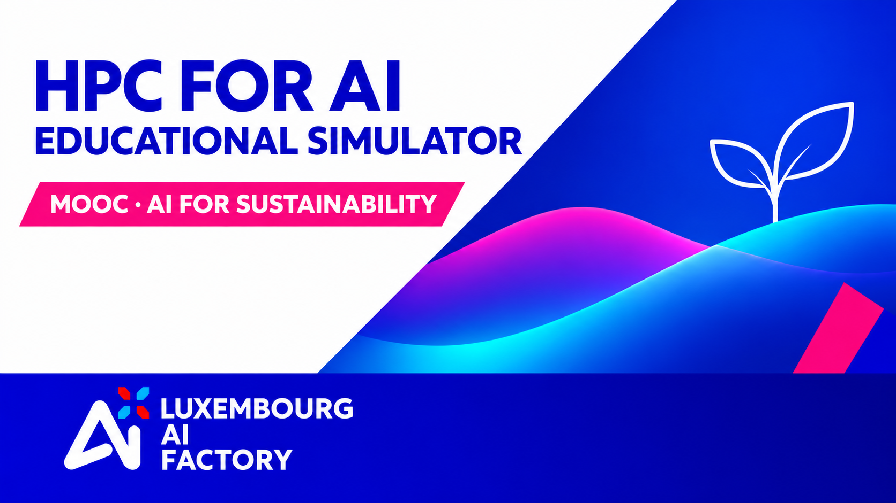

HPC fundamentals
Linux, remote access, file management and HPC system architecture.

AI FOR SUSTAINABILITY MOOC
High-performance computing (HPC) plays an increasingly important role in the development, training and deployment of artificial intelligence (AI) applications.
As AI and HPC become more closely connected, it is increasingly important to develop skills and knowledge that span both fields. The EuroHPC Joint Undertaking (2023) highlights the importance of supporting AI communities in becoming familiar with supercomputing environments and their computational capabilities.
The EuroHPC Multi-Annual Strategic Programme 2021–2027 (2025 revision) further emphasises the integration of HPC education into AI curricula, training opportunities for AI professionals, and hands-on learning approaches. Particular attention is given to resource utilisation and energy efficiency.
Learning how to use HPC systems involves understanding their operational principles and gaining practical experience. An accessible learning environment allows participants to experiment, encounter practical challenges and develop their skills at their own pace.
With this motivation, the HPC for AI Educational Simulator was developed at the University of Luxembourg for the AI for Sustainability MOOC of the Luxembourg AI Factory.
The simulator reproduces selected operational characteristics of an HPC system, allowing participants to explore HPC concepts and workflows without requiring access to production supercomputing infrastructure.
ACCESS THE SIMULATORPRACTICAL LEARNING
The practical curriculum introduces HPC concepts and AI workflows through exercises of increasing complexity.
Linux, remote access, file management and HPC system architecture.
Resource allocation, interactive and batch jobs, monitoring and troubleshooting.
Software modules, Python environments and containerised applications.
Serial, single-node parallel and distributed AI applications.
Computational efficiency, scalability and responsible resource utilisation.
Independent execution and management of AI workloads using HPC principles.
GETTING STARTED
The simulator is accessible through GitHub Codespaces directly from your web browser. No local software installation or institutional HPC account is required.
Familiarise yourself with the technical requirements, connection instructions and learning environment.
READ DOCUMENTATIONCreate your individual learning environment in GitHub Codespaces.
LAUNCH SIMULATORIf you have already created a Codespace, reopen your existing environment. Stop your Codespace when you finish a learning session to conserve your quota.
RESUME YOUR CODESPACE[1] EuroHPC Joint Undertaking (2023). Support Centre for HPC-powered Artificial Intelligence (AI) Applications. Digital Europe Programme. DIGITAL-EUROHPC-JU-2023-AISC-03, pp. 5–8.
[2] EuroHPC Joint Undertaking (2025). Multi-Annual Strategic Programme 2021–2027. Amendment No. 3. Governing Board Decision No. 08/2025. Section 4.6.3, HPC training for AI users, pp. 52–53.